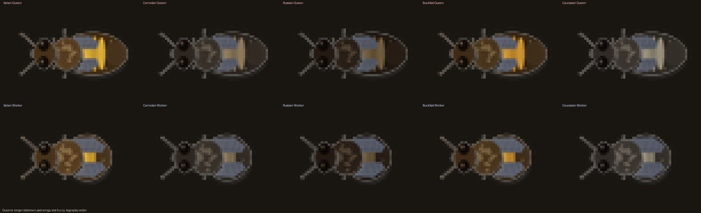
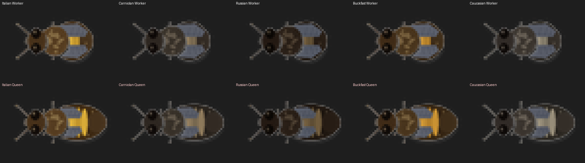

Find the Queen
Overview
Design Intent
The "Find the Queen" mechanic is the signature observational challenge woven into the frame inspection system. Every time the player pulls a frame during a hive inspection, there is a chance the queen is on that frame. Spotting her is never required to complete an inspection, but doing so rewards the player with XP, confirms the queen is alive and present, and deepens the feeling of mastery that comes from reading a hive.
Real beekeepers spend minutes scanning thousands of bees on a single frame, looking for the one with the longer abdomen, the slightly different gait, the ring of attendants. This mechanic captures that moment of recognition -- the satisfying "there she is" -- without requiring the player to pixel-hunt. Probability gates the sighting, but skill and breed knowledge make it more likely.
Player Fantasy
The player fantasy is that of a seasoned beekeeper who can glance at a frame crawling with hundreds of bees and pick out the queen by subtle differences in body shape, movement, and behavior. Early on, spotting the queen feels lucky. By mid-game, it feels earned. By late-game, missing her feels wrong.
Parent GDD References
| Section | Topic | Relevance |
|---|---|---|
| S6.1 | Hive Inspection System | Queen finding is embedded in the frame-by-frame inspection flow. The queen occupies one frame; the player discovers her (or not) as they inspect. |
| S6.1 Sighting Model | Queen Sighting Probability | 60% base + 1% per level, capped at 80%. Awards +15 XP. Implemented in InspectionOverlay.gd. |
| S3.2 | The Queen | Queen biology: species, grade, age, laying rate. Queen grade is inferred from brood patterns, never shown as a letter. |
| S3.8 | Frame Inspection & Queen Laying Patterns | The 3D ellipsoid brood nest determines which frames are queen-active. The queen is placed on the frame with the densest brood. |
| S6.1.1 | Inspection Knowledge Tiers | Higher tiers reveal more queen info: Tier 3 shows laying assessment, Tier 4 shows gene quality hint, Tier 5 shows grade/species string. |
Core Mechanic
Trigger Conditions
At the start of every inspection, two rolls determine the session: the difficulty rank (Easy/Medium/Hard) and the queen visibility roll (80% chance the queen is present on her frame). Both are rolled once and persist for the entire inspection.
| Condition | Details |
|---|---|
| Queen visibility roll (80%) | At inspection start, rng.randf() < 0.80. If it passes, the queen bee entity is spawned on her assigned frame with attendants. If it fails (20%), the queen entity is not spawned at all -- the player sees only workers on every frame. This is determined once, at the moment the inspection opens, not per-frame. |
| Queen is present in hive | The hive simulation must report queen.present == true. Queenless hives never spawn a queen entity regardless of the 80% roll. |
| Correct frame | The queen entity only exists on one frame index (determined by brood nest center via _get_queen_frame_idx()). On all other frames, the player sees only workers. |
| Player clicks queen | The player must visually find and click the queen entity on her frame. There is no auto-sighting, no probability roll per frame view. Finding the queen is entirely skill-based once she's been spawned. |
Queen Visibility Model
The queen visibility roll replaces the old per-frame-view probability system. Instead of rolling every time the player flips to a frame, the game makes a single binary decision at inspection start: is the queen findable this inspection, or not?
| Parameter | Value | Notes |
|---|---|---|
| Queen spawn chance | 80% | Flat rate. Rolled once at inspection start. If pass: queen entity + attendants are spawned on her frame. If fail: no queen entity exists anywhere this inspection. |
| XP reward | Easy: +10 XP, Medium: +15 XP, Hard: +25 XP | Awarded when the player clicks the queen entity. Scales with inspection difficulty rank. See Inspection Difficulty Rank. |
| Notification | "Queen confirmed!" | Toast notification shown only when the player clicks on the queen. Via NotificationManager.show_queen_sighting(). Falls back to inline Label if autoload is unavailable. |
| No queen feedback | None | If the queen was not spawned (20%), the player simply never finds her. No "queen not found" message -- the player doesn't know if they missed her or if she wasn't visible. This mirrors the real beekeeping experience. |
if not sim.queen.present: return false -- queenless hive, never spawn
return rng.randf() < QUEEN_SPAWN_CHANCE -- 0.80
Design Note: The 80/20 split is deliberate. Even experienced beekeepers sometimes don't spot the queen during an inspection -- she may be hiding in a cluster, on the other side of a frame the player didn't flip, or simply hard to pick out. The 20% miss rate preserves tension: the player knows the queen isn't guaranteed, so every successful find feels earned. It also prevents the mechanic from becoming routine. Critically, when the queen IS spawned, finding her is pure player skill -- no more dice rolls, just observation.
Visual Tells -- How Real Beekeepers Spot Queens
The sprite system is designed to encode the same visual cues that real beekeepers use when scanning a frame. These cues are subtle at game-sprite scale, which is intentional: the player should feel the satisfaction of pattern recognition, not be handed the answer.
The queen's abdomen extends noticeably past her wing tips. Workers' wings cover nearly all of their abdomen. This is the primary tell -- the elongated shape that catches your eye when scanning a dense frame.
Queen wings only reach about halfway down her abdomen, while worker wings cover most of theirs. At sprite scale, this manifests as more body color visible behind the wings on queens.
Queens have a shinier, less hairy thorax and abdomen compared to workers. The sprite renderer uses fewer hair dots (6 vs 10 on abdomen, 12 vs 18 on thorax) to achieve this.
Queen legs angle further outward (+1.2 px splay) than worker legs, giving a slightly wider stance visible on close inspection.
Difficulty Scaling
Queen-finding difficulty combines two layers: the colony population (organic, simulation-driven) and an inspection difficulty rank (rolled once when the player opens the inspection). Together they determine how many worker bees crowd the frame and how hard it is to pick out the queen.
Inspection Difficulty Rank
When the player initiates an inspection, the game rolls a difficulty rank: Easy, Medium, or Hard. This rank persists for the entire inspection session and controls three parameters that together define the visual density and challenge: bee count multiplier, minimum spacing between bees, and cluster tightness (how tightly bees clump toward the frame center). These three levers mirror the exact parameters used to generate the static mockup images in generate_frame_sim.py.
| Rank | Density Mult | Min Spacing (px) | Cluster Tightness | Mockup Reference |
|---|---|---|---|---|
| Easy | 0.33 (1/3) | 26-30 | 0.26-0.30 (spread out) | 30-40 bees, open comb visible, bees individually distinct |
| Medium | 0.67 (2/3) | 16-18 | 0.19-0.20 (moderate clumps) | 75-82 bees, moderate coverage, clusters forming |
| Hard | 1.0 (3/3) | 10-13 | 0.15-0.18 (tight packing) | 100-115 bees, dense coverage, overlapping bodies |
Spacing is the minimum pixel distance between any two bee entity centers. On Easy, bees keep wide gaps between them so each individual is clearly distinct. On Hard, bees overlap and crowd together, making shape-based identification much harder. Cluster tightness is the standard deviation of the Gaussian distribution used when picking spawn/target positions -- smaller values pull bees toward the frame center, creating dense knots with sparse edges. On Easy, bees spread across the full comb face.
The density multiplier is applied after the 1:100 ratio calculation but before jitter and clamping. Spacing and cluster tightness are applied in the BeeEntity spawn and target-selection logic. See the density model formula in Section 8 for the exact pipeline and the collision section for how spacing interacts with soft repulsion.
Roll Probabilities
The default implementation ships with flat equal probability: 33% Easy, 33% Medium, 34% Hard. This is deliberately simple so the mechanic can be tested and tuned in playtesting before adding complexity.
roll = rng.randi() % 3
if roll == 0: return EASY -- 33%
if roll == 1: return MEDIUM -- 33%
return HARD -- 34%
The following optional bias hooks are documented here for future tuning but are not active at Phase 2.0 launch. Each one shifts weight between the three tiers without changing the core formula:
| Bias Hook | Source | Effect (when enabled) | Rationale |
|---|---|---|---|
| Player level | GameData.player_level | Levels 1-3: +15% Easy, -15% Hard. Levels 8+: -10% Easy, +10% Hard. | Eases new players in, challenges veterans. |
| Knowledge tier | InspectionOverlay._inspection_knowledge_tier | Tier 4-5: +10% Hard, -10% Easy. | Experienced inspectors see more realistic density. |
| Temperament | queen.temperament | Defensive colonies: +20% Hard. Calm colonies: +10% Easy. | Links queen genetics to inspection experience. |
| Congestion | congestion_state 2-3 | Force Medium minimum (no Easy). State 3: force Hard. | Overcrowded hives are physically packed. |
| Colony size | nurse_count < 1000 | Force Easy (even Hard would only show MIN_VISIBLE bees). | Prevents meaningless Hard on tiny colonies. |
To enable a bias hook later: add a weighted roll function that adjusts the base 33/33/34 split by the bias percentages above. Multiple hooks stack additively and the final probabilities are clamped to [5%, 80%] per tier to prevent any tier from being eliminated entirely.
Combined Difficulty Factors
| Factor | Easier | Harder |
|---|---|---|
| Inspection rank | Easy (1/3 density) -- only a third of expected bees appear | Hard (3/3 density) -- full bee count from ratio |
| Colony size (via ratio) | Nuc/package: 3-6 visible bees on Easy, 8-15 on Hard | Peak/booming: 7-19 on Easy, 27-56 on Hard |
| Breed color | Italian (golden), Buckfast (amber) -- queen's bands contrast | Russian (very dark), Carniolan (grey-brown) -- queen blends in |
| Cluster tightness | Spread out, individual bees distinct | Tight clusters, overlapping bodies |
| Colony temperament | Calm colonies hold still on frames | Defensive colonies run -- chaotic movement |
| Queen marking | Marked queens (color dot on thorax) are trivially spotted | Unmarked queens require anatomical identification |
Note on mockup images: The static simulation images in the find_the_queen/ folder use fixed bee counts (30-115) for illustration purposes and do not use the ratio formula or the inspection rank multiplier. In the actual game, visible bee count is always derived from nurse_count * frame_share / 100 * difficulty_mult + jitter, clamped to [MIN_VISIBLE, MAX_VISIBLE].
Breed Visual Identity
Color Palettes
Each of the five in-game breeds has a distinct color palette based on real-world honeybee race coloring. The palette defines head, thorax, abdomen bands, legs, antennae, and wings. Wing colors are intentionally muted (dark grey-blue, RGB 88-104 range) across all breeds to avoid bright distracting highlights and to keep the focus on body shape differences.
Bright golden-yellow bands, light brown thorax. The "classic" honeybee look. Queen is easiest to spot due to high contrast between her golden bands and dark abdomen segments. Most popular beginner breed in real beekeeping.
Warm amber-orange bands, medium brown thorax. Visually similar to Italian but slightly more muted and variable. A hybrid breed developed at Buckfast Abbey. Queen's amber coloring still provides reasonable contrast.
Dusky grey-brown bands, dark grey thorax. Much more subdued than Italian or Buckfast. Queen blends more with workers due to low contrast between band colors and dark body. Moderate difficulty.
Silvery-grey bands with a subtle blue-grey sheen, dark thorax. Muted and cool-toned. Queen's elongated abdomen is the primary tell since color differentiation is minimal. Hard difficulty tier.
Very dark brown to near-black body, muted pale bands barely visible. The hardest breed for queen-finding because everything is dark. Queen must be identified purely by shape -- abdomen length, wing proportion, and leg splay. Expert difficulty.
Queen vs Worker Anatomy
The sprite system renders queens and workers from the same base template with specific parameter differences. These differences are calibrated to be noticeable when you know what to look for, but not obvious at a casual glance -- mirroring the real beekeeping experience.
| Feature | Worker | Queen | Visual Effect |
|---|---|---|---|
| Abdomen center offset | cx + 6.5 | cx + 9.0 | Queen body sits further back, abdomen projects further from thorax. |
| Abdomen radius X | 10.0 | 14.5 | ~45% longer. The signature elongated look. |
| Abdomen radius Y | 10.0 | 9.2 | Slightly narrower, giving a tapered rather than round shape. |
| Stripe bands | 4 bands | 5 bands | Extra band fills the longer abdomen. |
| Wing length | 13.0 px | 10.0 px | Workers' wings cover abdomen; queen's wings end halfway. Key tell. |
| Wing width | 6.5 px | 5.5 px | Slightly narrower wings on queens. |
| Thorax radius | 7.0 x 7.5 | 6.5 x 7.0 | Queen's thorax slightly smaller relative to her longer body. |
| Hair dots (abdomen) | 10 | 6 | Queen appears shinier, less fuzzy. |
| Hair dots (thorax) | 18 | 12 | Same shinier effect on thorax. |
| Leg splay extra | 0 | +1.2 px | Queen legs spread wider. |

Breed Difficulty Ranking
| Rank | Breed | Difficulty | Reason |
|---|---|---|---|
| 1 (easiest) | Italian | Easy | Bright golden bands create maximum contrast. Queen's elongated golden abdomen stands out clearly from the crowd. |
| 2 | Buckfast | Easy-Medium | Warm amber is still distinct but slightly less vivid than Italian. Variable coloring adds mild complexity. |
| 3 | Carniolan | Medium | Grey-brown tones reduce contrast between queen and workers. Shape becomes the primary identifier. |
| 4 | Caucasian | Hard | Silvery-grey palette with minimal color differentiation. Must rely on body proportions. |
| 5 (hardest) | Russian | Very Hard | Near-black coloring makes all bees look similar. Only shape, fuzz level, and leg splay distinguish the queen. Expert-only. |
Sprite Asset Specification
Dimensions & Layout
| Parameter | Value | Notes |
|---|---|---|
| Cell size | 60 x 42 px | Wide enough for queen's full abdomen plus rotation headroom. Expanded from v1's 48x36 and v2's 56x40. |
| Directions | 8 | E, NE, N, NW, W, SW, S, SE. Each row of the spritesheet. |
| Walk frames | 4 | Looping walk cycle with leg alternation (tripod gait) and abdomen bob. |
| Idle frames | 3 | Antenna twitch, subtle wing flutter on frame 1. |
| Total frames | 7 per direction | Cols 0-3: walk. Cols 4-6: idle. |
| Spritesheet size | 420 x 336 px | 7 cols x 8 rows = 56 cells per sheet. |
| Superscale | 5x internal | All geometry is drawn at 300x210 then downscaled via LANCZOS for smooth anti-aliasing. |
| Output per breed | 3 files | Spritesheet (420x336), Preview (1260x1008 at 3x), Close-up (480x336 at 8x). |
| Total outputs | 30 images | 5 breeds x 2 roles (worker + queen) x 3 files each. |
Rendering Pipeline
Each bee frame is composited back-to-front in five layers: legs (3 pairs, tripod gait animation), abdomen (striped teardrop with hair dots), wings (forewing + hindwing polygons with venation), thorax (round fuzzy disc), and head (wide capsule with compound eyes, mandibles, and segmented antennae). Everything is rendered at 5x superscale and downscaled with LANCZOS. Rotation for the 8 directions uses BICUBIC interpolation with padding to prevent edge clipping.
Wing Design Notes
Wings went through several iterations. The current design uses subdued grey-blue tones (fill around RGB 88-104, edge 72-90, vein 58-78) that sit well below the body colors. This was a deliberate choice after earlier versions had wings that were too bright and drew the eye away from the body shape differences that matter for queen identification. Each wing has a forewing (larger, front) and hindwing (smaller, partially occluded) with three cross-veins drawn as thin lines. Queens have shorter wings (10px vs 13px) that expose more of the abdomen behind them -- this is the single most important visual cue for finding the queen.

Simulation Mockups
Overview & Purpose
The find_the_queen/ directory contains 12 simulated frame images at three difficulty tiers. Each scenario is a pair: a challenge image (bees on a honeycomb frame with one hidden queen) and an answer image (same frame with the queen circled in red). These serve as visual reference for how the in-game queen-finding will look at various colony densities and breed combinations.
The simulation places bees on a procedurally generated honeycomb background using Gaussian clustering centered on the frame. Bee sprites are rendered at 1.3x scale, depth-sorted by Y position, and individually rotated to one of 8 random directions. The queen is always included and placed using the same spatial algorithm as workers -- she gets no special positioning advantage.
Difficulty Tiers
Easy (Scenarios 01-08)
30-40 workers with generous spacing (min 26-30px between centers) and loose clustering (std dev 27-30% of frame size). Uses lighter breeds -- Italian and Buckfast primarily, plus one Caucasian variant. Plenty of visible comb between bees. The queen's longer abdomen is easy to pick out with open space around her.
| Scenario | Breed | Workers | Spacing | Tag |
|---|---|---|---|---|
| 01-02 | Italian | 35 | 28px / 0.28 | easy_italian |
| 03-04 | Buckfast | 40 | 26px / 0.26 | easy_buckfast |
| 05-06 | Caucasian | 30 | 30px / 0.30 | easy_caucasian |
| 07-08 | Italian | 38 | 27px / 0.27 | easy_italian2 |
Medium (Scenarios 09-16)
75-82 workers with tighter spacing (16-18px) and moderate clustering (std dev 19-20%). Mixes darker breeds -- Carniolan, Russian -- with some lighter ones. Bees overlap visually and the queen must be identified by shape amidst the crowd rather than by isolation.
| Scenario | Breed | Workers | Spacing | Tag |
|---|---|---|---|---|
| 09-10 | Carniolan | 75 | 18px / 0.20 | medium_carniolan |
| 11-12 | Russian | 80 | 16px / 0.19 | medium_russian |
| 13-14 | Buckfast | 82 | 17px / 0.19 | medium_buckfast |
| 15-16 | Italian | 78 | 17px / 0.20 | medium_italian |
Hard (Scenarios 17-24)
100-115 workers with aggressive spacing (10-13px) and tight clustering (std dev 15-18%). Exclusively dark breeds -- Russian, Caucasian, Carniolan. The frame is nearly covered. Finding the queen requires careful scanning of body proportions and wing length in a sea of similarly-colored bees.
| Scenario | Breed | Workers | Spacing | Tag |
|---|---|---|---|---|
| 17-18 | Russian | 105 | 12px / 0.17 | hard_russian |
| 19-20 | Caucasian | 100 | 13px / 0.18 | hard_caucasian |
| 21-22 | Carniolan | 110 | 11px / 0.16 | hard_carniolan |
| 23-24 | Russian | 115 | 10px / 0.15 | hard_russian2 |
File Manifest
All simulation images are 800 x 450 px, optimized PNG. Files are numbered sequentially so they sort in difficulty order, with each challenge immediately followed by its answer reveal.
01_challenge_easy_italian.png -- 35 workers, Italian
02_answer_easy_italian.png
03_challenge_easy_buckfast.png -- 40 workers, Buckfast
04_answer_easy_buckfast.png
05_challenge_easy_caucasian.png -- 30 workers, Caucasian
06_answer_easy_caucasian.png
07_challenge_easy_italian2.png -- 38 workers, Italian
08_answer_easy_italian2.png
09_challenge_medium_carniolan.png -- 75 workers, Carniolan
10_answer_medium_carniolan.png
11_challenge_medium_russian.png -- 80 workers, Russian
12_answer_medium_russian.png
13_challenge_medium_buckfast.png -- 82 workers, Buckfast
14_answer_medium_buckfast.png
15_challenge_medium_italian.png -- 78 workers, Italian
16_answer_medium_italian.png
17_challenge_hard_russian.png -- 105 workers, Russian
18_answer_hard_russian.png
19_challenge_hard_caucasian.png -- 100 workers, Caucasian
20_answer_hard_caucasian.png
21_challenge_hard_carniolan.png -- 110 workers, Carniolan
22_answer_hard_carniolan.png
23_challenge_hard_russian2.png -- 115 workers, Russian
24_answer_hard_russian2.png
Integration & Code
InspectionOverlay.gd
The queen sighting mechanic lives in scripts/ui/InspectionOverlay.gd. It hooks into three navigation events: switching frames (_switch_frame), switching boxes (_switch_box), and flipping sides (_flip_side). Each of these calls _check_queen_sighting() after recording the current side's cell data.
| Constant / Var | Value | Purpose |
|---|---|---|
| QUEEN_SIGHT_BASE | 0.60 | Base sighting probability (60%). |
| QUEEN_SIGHT_MAX | 0.80 | Hard cap on sighting probability. |
| QUEEN_SIGHT_XP | 15 | XP awarded on successful sighting. |
| _queen_seen | bool | Set to true after first successful sighting. Reset to false when inspection opens. |
_get_queen_frame_idx()
Determines which frame the queen is on by querying the simulation's frame order and returning the first (center-most) frame index. The queen occupies the densest brood frame, which aligns with real bee behavior -- queens lay outward from the center of the nest.
_check_queen_sighting()
The core roll. Checks preconditions (not already seen, queen present, correct frame), calculates probability as min(BASE + level * 0.01, MAX), and rolls. On success, sets _queen_seen = true, awards XP via GameData.add_xp(), and fires the notification.
FrameRenderer Integration
The FrameRenderer draws the cell grid for each frame face. In the current Phase 1 implementation, the queen sighting is probability-based and does not require the queen sprite to be physically rendered on the frame. Future phases (see S7) will render the actual queen sprite walking on the frame, making the mechanic a true visual search.
XP & Reward Flow
| Step | System | Action |
|---|---|---|
| 1 | InspectionOverlay | Sighting roll succeeds. Calls GameData.add_xp(15). |
| 2 | GameData | Adds XP to player total. Checks for level-up threshold. |
| 3 | InspectionOverlay | Calls _show_queen_notification(). |
| 4 | NotificationManager | Displays toast: "Queen confirmed! +15 XP". Slides in from right, fades after delay. |
| 5 | InspectionOverlay | Sets _queen_seen = true. No further rolls this inspection. |
Design Note: The queen info displayed in the inspection stats panel scales with Knowledge Tier. Tier 3 (Competent) shows a laying assessment ("Laying well" / "Sparse lay"). Tier 4 (Advanced) adds a gene quality hint ("Strong gene" / "Weak gene"). Tier 5 (Master) shows the actual grade/species string ("Q: A/Ita"). The queen sighting itself is available at all tiers -- even beginners can get lucky.
System Hook Points
Full Data Flow -- Inspection Open to Queen Sighting
Understanding how the queen finder hooks into the existing system requires tracing the data flow from when the player opens an inspection through to when a queen sighting can occur. Every component in this chain already exists; the queen finder adds a visual layer on top.
| Step | System | Action | Data Passed |
|---|---|---|---|
| 1 | Player / hive.gd | Player presses inspect key on a hive node | hive_node reference |
| 2 | InspectionOverlay.open() | Deducts 10 energy, resolves knowledge tier (1-5), resets state: _queen_seen=false, _viewed_sides.clear(), creates new FrameRenderer instance | _hive, _sim (HiveSimulation node) |
| 3 | FrameRenderer | Loads cell_atlas.png (364x20 px, 14 cell states) via Image.load_from_file(). Prepares canvas buffers for honeycomb rendering. | Atlas image cached in _atlas_image |
| 4 | InspectionOverlay._refresh_frame() | Calls _renderer.render_honeycomb(frame, side). Result assigned to _cell_rect.texture. | HiveFrame object, side int (0=A, 1=B) |
| 5 | FrameRenderer.render_honeycomb() | Creates 1833x755 canvas. Blits each cell's atlas sprite at hex-offset positions (26px col step, 15px row step, 13px odd-row shift). Dirty-checked via PackedByteArray hash. | PackedByteArray (cells or cells_b), ImageTexture output |
| 6 | InspectionOverlay._record_current_side() | If first visit to this frame-side, calls CellStateTransition.full_count_side() and accumulates cell counts into _accum_counts. | Dictionary {state_id: count} |
| 7 | InspectionOverlay._check_queen_sighting() | Checks: queen present? Correct frame? Roll probability. On success: GameData.add_xp(15), fire notification, set _queen_seen=true. | queen dict from _sim, player_level from GameData |
Hook Point for Phase 2: Step 5 is where bee sprites get composited onto the honeycomb canvas. The FrameRenderer currently returns a static cell grid. The queen finder Phase 2 adds a second render pass that overlays animated bee sprites on top of this base layer. The existing dirty-checking hash system means the cell grid only re-renders when cell data changes, while the bee overlay re-renders every animation tick.
Queen Frame Assignment Algorithm
The queen is not randomly placed. She occupies the frame with the most active laying, determined by scanning frames in the center-out order defined by the brood nest model. This mirrors real bee biology: the queen works the center of the nest where conditions are warmest and brood density is highest.
| Constant | Value | Meaning |
|---|---|---|
| QUEEN_FRAME_ORDER | [4, 5, 3, 6, 2, 7, 1, 8, 0, 9] | Frame indices sorted center-outward. Frame 4-5 are the core of the brood nest. |
_get_queen_frame_idx() Algorithm
Iterates through QUEEN_FRAME_ORDER and returns the first frame that contains any eggs (S_EGG cells > 0). If no frames have eggs (queenless transition, winter shutdown), defaults to frame 4 (nest center). This means the queen is always on the most actively-laid frame, which is the frame the player is most likely to inspect thoroughly.
3D Ellipsoid Brood Nest Model
The queen's laying pattern and bee density on frames are governed by a 3D ellipsoid centered in the brood box. This model determines where eggs are laid, which cells are eligible for brood, and -- critically for the queen finder -- where bee density is highest on any given frame.
| Axis | Center | Radius | Physical Meaning |
|---|---|---|---|
| Z (frame depth) | 4.5 (between frames 4-5) | 5.0 | Brood spans frames 0-9 but concentrates at center. Outer frames are mostly honey/pollen. |
| X (horizontal) | 35.0 (mid-column of 70-col grid) | 38.0 | Brood fills most of the frame width, leaving a thin honey band at edges. |
| Y (vertical) | 15.0 (upper third) | 42.0 (asymmetric downward) | Brood nest sits high and extends down. Top arch = honey cap. Bottom = more brood. Asymmetric because heat rises. |
3D Distance Formula
Every cell in the hive has a normalized 3D distance from the ellipsoid center. Cells with distance ≤ 1.0 are inside the brood zone. The queen lays from center outward, sorted by this distance.
dz = (frame_idx - 4.5) / 5.0
dx = (col - 35) / 38.0
dy = (row - 15) / 42.0
return sqrt(dz*dz + dx*dx + dy*dy)
Cells at dist 0.0 = dead center of nest
Cells at dist 1.0 = edge of brood zone
Cells at dist > 1.0 = honey/pollen/empty
This distance value directly drives bee density per cell in the queen finder overlay. Center cells (dist 0.0-0.3) have the most bees walking over them. Edge cells (dist 0.8-1.0) have sparse bee traffic. Cells outside the ellipsoid (dist > 1.0) are mostly empty of nurse bees.
Hex Coordinate System
The FrameRenderer uses a pointy-top hexagonal offset grid. All bee positions in the queen finder overlay must map to this same coordinate space.
| Parameter | Value | Purpose |
|---|---|---|
| HEX_COL_STEP | 26 px | Horizontal distance between cell centers. |
| HEX_ROW_STEP | 15 px | Vertical distance between rows (3/4 of cell height for hex packing). |
| HEX_ODD_SHIFT | 13 px | Odd-numbered rows shift right by half a column width. |
| Canvas size | 1833 x 755 px | Full honeycomb render (70 cols x 50 rows in hex layout). |
Grid-to-Pixel Conversion
x = col * 26 + (13 if row % 2 == 1 else 0)
y = row * 15
return (x, y)
pixel_to_cell(px, py):
row = round(py / 15)
x_shift = 13 if row % 2 == 1 else 0
col = round((px - x_shift) / 26)
return (col, row)
Snapshot Pipeline
Every daily tick, HiveSimulation.tick() runs its 10-step pipeline and writes a snapshot via SnapshotWriter. The InspectionOverlay reads _sim.last_snapshot for queen data. Key snapshot fields consumed by the queen finder:
| Field | Type | Used By |
|---|---|---|
| queen_present | bool | Gate: skip sighting if false |
| queen_species | String | Tier 5 display, breed-specific sprite selection |
| queen_grade | String (S/A/B/C/D/F) | Tier 4-5 display, affects attendant count |
| queen_age | int (days) | Phase 2: older queens move slower |
| nurse_count | int | Determines how many worker sprites to render |
| egg_count | int | Used by _get_queen_frame_idx() to find queen's frame |
| congestion_state | int (0-3) | Affects movement agitation; may bias difficulty rank roll toward Hard |
| health_score | float (0-100) | Unhealthy colonies have erratic movement patterns |
| queen.temperament | String | May bias difficulty rank roll (defensive -> harder, calm -> easier) |
Bee Movement Algorithm
Overview & Goals
Phase 2 replaces the probability-based sighting roll with a live visual search. The player sees actual bee sprites walking on the honeycomb frame and must identify the queen by her anatomy and movement pattern. This requires a movement system that is visually convincing, performant at 60+ sprites, and produces natural-looking bee behavior on a hex grid.
The movement system does not simulate individual bee AI. Bees are not making decisions. They are animated particles following simple movement rules that, in aggregate, produce the appearance of purposeful colony behavior. The goal is visual believability at the frame level, not entomological accuracy at the individual level.
BeeEntity Structure
Each visible bee on the frame is a lightweight data object. No scene tree nodes, no physics bodies. Pure data processed in a single loop.
pos_x: float -- pixel X on honeycomb canvas (0-1833)
pos_y: float -- pixel Y on honeycomb canvas (0-755)
target_x: float -- destination pixel X
target_y: float -- destination pixel Y
direction: int -- 0-7 facing (indexes into spritesheet row)
anim_frame: int -- 0-6 current animation frame
anim_timer: float -- seconds until next frame advance
state: int -- 0=WALKING, 1=IDLE, 2=TURNING
idle_remaining: float -- seconds left in idle pause
speed: float -- pixels per second (varies by role)
is_queen: bool -- true for the single queen entity
is_attendant: bool -- true for bees in the queen's court
breed_key: String -- palette lookup for sprite rendering
Worker Movement Model
Worker bees on a brood frame exhibit a characteristic pattern: short bursts of purposeful walking (head into cells, check larvae, move to next) punctuated by brief pauses. They don't wander randomly -- they move in rough lines along the comb face, occasionally changing direction to inspect adjacent cells.
State Machine
| State | Behavior | Duration | Transition |
|---|---|---|---|
| WALKING | Move toward target at speed px/sec. Advance walk animation (frames 0-3) every WALK_FRAME_INTERVAL. Direction updated to face target. | Until within 2px of target | On arrival: 70% chance IDLE, 30% chance pick new target immediately (continuous walk). |
| IDLE | Stay in place. Play idle animation (frames 4-6) with antenna twitch. Simulates "head in cell" inspection behavior. | 0.4 - 1.8 seconds (random) | On expiry: pick new target, enter WALKING. |
| TURNING | Rotate direction toward new target over 0.15 seconds. No position change. Brief visual pause before walking. | 0.1 - 0.2 seconds | On completion: enter WALKING with new direction. |
Target Selection Algorithm
When a worker needs a new destination, it picks a target cell using a weighted system that biases movement toward the brood nest center:
-- 60% chance: move to a nearby cell (1-3 cells away)
-- 30% chance: move toward brood nest center
-- 10% chance: random cell anywhere on frame
NEARBY (most common):
offset_col = randi_range(-3, 3)
offset_row = randi_range(-3, 3)
target = clamp(current + offset, frame_bounds)
CENTER-BIASED:
lerp toward (35, 25) with t = randf_range(0.2, 0.5)
add jitter: +/- randi_range(-2, 2) on each axis
RANDOM:
col = randi_range(2, 67)
row = randi_range(2, 47)
return cell_to_pixel(target_col, target_row)
Queen Movement Model
The queen moves differently from workers in three critical ways: she is slower, she pauses longer, and she moves with more deliberation (fewer random direction changes, longer straight-line segments). These behavioral differences are the motion-based analog of the visual shape tells.
| Parameter | Worker | Queen | Gameplay Effect |
|---|---|---|---|
| Base speed | 28-36 px/sec | 14-18 px/sec | Queen moves at roughly half the worker speed. She stands out as the "slow one." |
| Idle duration | 0.4-1.8 sec | 1.5-4.0 sec | Queen pauses much longer between moves. She's laying eggs, not patrolling. |
| Walk segment | 1-3 cells | 1-2 cells | Queen takes shorter steps. Deliberate, not scurrying. |
| Direction change rate | High (new dir each segment) | Low (60% chance to continue same dir) | Queen walks in straighter lines. Workers zigzag. |
| Animation speed | 8 fps | 5 fps | Queen's legs move slower, giving a stately gait. |
| Age modifier | None | speed *= max(0.6, 1.0 - age_days/1500) | Older queens slow down. A 2-year queen moves at ~65% speed. |
Queen Target Selection
-- 60% chance: continue roughly same direction (1-2 cells forward)
-- 25% chance: move to adjacent brood cell (checking larvae)
-- 15% chance: slight direction change (30-60 degrees)
CONTINUE FORWARD:
target = current + direction_vector * randi_range(1, 2)
clamp to frame bounds, bounce off edges
ADJACENT BROOD CELL:
pick random hex neighbor (6 directions)
prefer cells with S_EGG or S_DRAWN_EMPTY state
SLIGHT TURN:
rotate current heading by +/- 1-2 direction steps
advance 1 cell in new direction
Design Note: The queen never crosses to the honey/pollen band at the frame edges. Her target selection is constrained to cells within the ellipsoid (3D distance ≤ 1.0). Workers occasionally wander out to the honey band, but the queen stays in the brood zone. This is both biologically accurate and a subtle gameplay cue -- the queen is always somewhere in the dense middle area.
Attendant Circle (Retinue Behavior)
In real hives, the queen is surrounded by 8-12 attendant workers who face inward toward her, feed her, and groom her. This "retinue" or "court" is one of the most reliable visual cues for finding the queen. The attendant system implements this.
Attendant Count by Queen Grade
| Queen Grade | Attendants | Visual Effect |
|---|---|---|
| S (Superior) | 10-12 | Large, obvious court circle. Queen is well-attended. |
| A (Above Avg) | 8-10 | Clear retinue, easy to spot the pattern. |
| B (Average) | 6-8 | Moderate court. Visible if you know to look. |
| C (Below Avg) | 4-5 | Sparse attendance. Colony losing faith in queen. |
| D (Poor) | 2-3 | Almost no court. Queen is being ignored. |
| F (Failing) | 0-1 | No retinue. Queen may be about to be superseded. |
Attendant Movement Algorithm
-- Each attendant has an assigned "slot" angle around the queen
slot_angle = (attendant_index / total_attendants) * TAU
orbit_radius = 18.0 px -- ~1 cell distance from queen center
-- Ideal position orbits slowly around the queen
slot_angle += ORBIT_SPEED * delta -- 0.08 rad/sec, very slow drift
ideal_x = queen.pos_x + cos(slot_angle) * orbit_radius
ideal_y = queen.pos_y + sin(slot_angle) * orbit_radius
-- Smoothly follow ideal position
bee.pos_x = lerp(bee.pos_x, ideal_x, 3.0 * delta)
bee.pos_y = lerp(bee.pos_y, ideal_y, 3.0 * delta)
-- Always face toward queen
bee.direction = angle_to_direction(atan2(queen.pos_y - bee.pos_y,
queen.pos_x - bee.pos_x))
-- Occasionally break off to check a cell, then return
-- 5% chance per second to do a 0.5-1.0s detour
The visual effect is a loose ring of inward-facing workers that drifts with the queen as she moves. The ring is not rigid -- attendants wobble, occasionally detour, and rejoin. This organic imperfection makes the pattern feel natural rather than artificial, while still being recognizable as "something different is happening here."
Attendant Scaling by Difficulty Rank
The attendant circle acts as a helping visual cue that scales inversely with difficulty. On Easy inspections, players get more attendants around the queen to help them learn the pattern. On Hard, attendants are reduced, forcing the player to rely on anatomy and movement alone.
| Difficulty Rank | Attendant Modifier | Effect (on Grade B queen, base 6-8) |
|---|---|---|
| Easy | x1.5 (50% more, rounded up) | 9-12 attendants -- large obvious court, strong visual hint |
| Medium | x1.0 (grade-based count, no change) | 6-8 attendants -- standard retinue |
| Hard | x0.5 (halved, rounded down, min 1 if grade C+) | 3-4 attendants -- sparse, court barely recognizable |
The modifier is applied after the queen grade lookup. On Easy, even a grade D queen gets 3-4 attendants instead of 2-3, making the court pattern visible. On Hard, even a grade S queen only gets 5-6 attendants, blending the court into the general crowd. Grade F queens always get 0-1 regardless of difficulty -- a failing queen is a failing queen.
Speed & Timing Constants
| Constant | Value | Notes |
|---|---|---|
| WORKER_SPEED_MIN | 28 px/sec | Calm colony, plenty of space |
| WORKER_SPEED_MAX | 36 px/sec | Agitated colony or crowded frame |
| QUEEN_SPEED_MIN | 14 px/sec | Slow deliberate movement |
| QUEEN_SPEED_MAX | 18 px/sec | Slightly faster when young queen |
| ATTENDANT_FOLLOW_SPEED | 3.0 (lerp weight) | How quickly attendants track queen position |
| ATTENDANT_ORBIT_SPEED | 0.08 rad/sec | Slow drift around queen (~78 sec full orbit) |
| ATTENDANT_ORBIT_RADIUS | 18 px | ~1 hex cell distance from queen center |
| WALK_FRAME_INTERVAL | 0.125 sec (8 fps) | Worker walk animation speed |
| QUEEN_FRAME_INTERVAL | 0.200 sec (5 fps) | Queen walk animation speed (slower gait) |
| IDLE_FRAME_INTERVAL | 0.300 sec | Idle antenna twitch rate (all bees) |
| WORKER_IDLE_MIN | 0.4 sec | Shortest idle pause for workers |
| WORKER_IDLE_MAX | 1.8 sec | Longest idle pause for workers |
| QUEEN_IDLE_MIN | 1.5 sec | Queen pauses longer (laying eggs) |
| QUEEN_IDLE_MAX | 4.0 sec | Long pause while laying in a cell |
| TURN_DURATION | 0.15 sec | Visual rotation pause before walking new dir |
Speed is NOT affected by inspection difficulty rank. All bees (workers and queen) move at the same speed regardless of Easy/Medium/Hard. This is deliberate: the queen's slower movement pattern is a core visual tell, and adjusting speed per difficulty would either make Easy trivial (slow queen = obvious) or break the feel of Hard (fast queen = frustrating, unrealistic). The three levers for difficulty are count, spacing, and clustering only. Speed varies only by temperament and congestion (see below).
Temperament & Congestion Modifiers
Colony mood affects both movement behavior and visible bee density. More temperamental colonies are harder to inspect because there are literally more bees running around on the frames -- agitated bees boil out of the comb and crowd the surface. This is a direct density multiplier applied on top of the difficulty rank multiplier.
| Condition | Density Modifier | Speed Modifier | Idle Modifier | Direction Change Rate |
|---|---|---|---|---|
| Calm (temperament ≥ 0.9) | x1.0 (no change) | x1.0 (base) | x1.0 (base) | Normal |
| Normal (temperament 0.7-0.9) | x1.15 (+15% more bees) | x1.1 | x0.85 | +10% more turns |
| Defensive (temperament < 0.7) | x1.4 (+40% more bees) | x1.3 | x0.6 | +30% more turns (jittery) |
| Congested (state ≥ 2) | x1.25 (+25% more bees) | x0.8 (slower, packed) | x1.3 (more waiting) | +20% (can't move freely) |
| Post-smoke | x0.85 (-15% fewer bees) | x0.7 (groggy) | x1.5 (longer pauses) | -20% (sluggish) |
The density modifier stacks multiplicatively with the difficulty rank multiplier. Example: Hard (x1.0) on a defensive colony (x1.4) = x1.4 total density. Easy (x0.33) on a defensive colony (x1.4) = x0.46 total density. This means a hot hive always feels busier than a calm one, regardless of the rolled difficulty. The combined multiplier is still clamped by MIN_VISIBLE and MAX_VISIBLE after jitter.
Why temperament affects density: In real beekeeping, defensive colonies are genuinely harder to inspect because the bees boil up off the comb, run across the frame surface in waves, and cluster more aggressively. A calm Italian hive holds still and you can scan methodically. A hot Russian hive has bees running everywhere. Tying temperament to visible bee count captures this directly -- it is not arbitrary difficulty, it is simulation-driven realism that the player can feel.
Pathfinding on Hex Grid
Bees do not use pathfinding. There are no obstacles to route around on a flat comb face. Movement is direct linear interpolation from current position to target position at the entity's speed. Direction is quantized to the nearest of 8 headings to select the correct spritesheet row.
dx = bee.target_x - bee.pos_x
dy = bee.target_y - bee.pos_y
dist = sqrt(dx*dx + dy*dy)
if dist < 2.0: -- arrived
transition to IDLE or pick new target
return
-- Normalize and move
nx = dx / dist
ny = dy / dist
step = bee.speed * delta
bee.pos_x += nx * min(step, dist)
bee.pos_y += ny * min(step, dist)
-- Update direction (8-way quantized)
angle = atan2(dy, dx)
bee.direction = int(round(angle / (TAU / 8))) % 8
Collision & Density Management
Bees do not have hard collision. Instead, a soft repulsion nudges bees apart when they overlap. The repulsion distance is difficulty-dependent: Easy inspections use a wider repulsion radius to keep bees spread apart, while Hard inspections use a tighter radius that allows overlap and clumping -- mirroring the spacing and clustering parameters from the difficulty rank table.
-- Match generate_frame_sim.py min_spacing parameters
MIN_BEE_DIST_EASY = 28 -- px, wide gaps, each bee distinct
MIN_BEE_DIST_MEDIUM = 17 -- px, moderate proximity
MIN_BEE_DIST_HARD = 12 -- px, tight packing, bodies overlap
CLUSTER TIGHTNESS (per difficulty rank):
-- Std dev fraction of canvas dimensions for spawn/target Gaussian
CLUSTER_SPREAD_EASY = 0.28 -- bees spread across full frame
CLUSTER_SPREAD_MEDIUM = 0.20 -- moderate clumping toward center
CLUSTER_SPREAD_HARD = 0.16 -- tight knots, sparse edges
for each pair (a, b) where distance < min_bee_dist:
overlap = min_bee_dist - distance
push_x = (a.pos_x - b.pos_x) / distance * overlap * 0.3
push_y = (a.pos_y - b.pos_y) / distance * overlap * 0.3
a.pos_x += push_x * delta * 60
a.pos_y += push_y * delta * 60
b.pos_x -= push_x * delta * 60
b.pos_y -= push_y * delta * 60
-- Use spatial hash (grid cells 20x20px) for O(n) neighbor lookup
-- Never pair-check all bees (O(n^2) is too expensive at 100+ bees)
The cluster tightness value is used when selecting spawn positions and new movement targets for walking bees. Instead of picking uniformly random positions on the canvas, the system uses a Gaussian distribution centered on the frame midpoint with standard deviation = canvas_dimension * CLUSTER_SPREAD. On Easy, this produces an even spread. On Hard, bees gravitate toward the center, forming dense knots with sparse edges -- exactly matching the sim mockup visual feel.
Bee Count Per Frame (Density Model)
The number of bees rendered on a frame is derived from a fixed ratio of the actual hive population, distributed proportionally by each frame's brood share, then jittered by a small random padding so it never looks mathematically perfect.
Real Hive Population Reference
These are the actual adult bee counts tracked by HiveSimulation. The queen finder only renders bees from the nurse population (the bees that physically walk on brood frames). House bees and foragers are elsewhere in the hive or out in the field.
| Colony State | Nurses | House | Foragers | Total Adults |
|---|---|---|---|---|
| Nuc install (spring) | 3,500 | 4,000 | 2,500 | 10,000 |
| Package install | 2,800 | 3,200 | 1,800 | 7,850 |
| Growing (early summer) | 5,000 | 6,000 | 4,000 | 15,000 |
| Peak (mid-summer) | 8,000 | 10,000 | 7,000 | 25,000+ |
| Strong peak | 12,000 | 14,000 | 10,000 | 36,000+ |
| Autumn decline | 3,000 | 4,000 | 2,000 | 9,000 |
| Winter cluster | 2,000 | 3,000 | 500 | 5,500 |
The Ratio: 1 Visible Bee per 100 Nurses
The core ratio is 1:100 -- for every 100 nurse bees in the hive simulation, 1 bee sprite is rendered on-screen. This is applied per frame based on that frame's proportional share of total brood cells, then scaled by the inspection difficulty rank (Easy = 1/3, Medium = 2/3, Hard = 3/3), then multiplied by the temperament density modifier (calm x1.0 through defensive x1.4), then padded with random jitter and clamped to [MIN_VISIBLE, MAX_VISIBLE]. The queen entity is only added if the 80% visibility roll passed at inspection start.
NURSE_TO_VISIBLE_RATIO = 100 -- 1 rendered bee per 100 real nurses
DIFFICULTY_MULT_EASY = 0.33 -- 1/3 density on Easy inspections
DIFFICULTY_MULT_MEDIUM = 0.67 -- 2/3 density on Medium inspections
DIFFICULTY_MULT_HARD = 1.0 -- full density on Hard inspections
QUEEN_SPAWN_CHANCE = 0.80 -- 80% chance queen entity is spawned this inspection
JITTER_MIN = -3 -- random padding low end
JITTER_MAX = 3 -- random padding high end (inclusive)
MIN_VISIBLE = 8 -- floor: always show at least 8 bees on an active frame
MAX_VISIBLE = 120 -- ceiling: performance cap
-- Step 1: Get actual nurse population from simulation
total_nurses = sim.nurse_count
-- Step 2: Calculate this frame's share of total brood
frame_brood = count_brood_cells(frame, SIDE_A) + count_brood_cells(frame, SIDE_B)
box_brood = 0
for f in all_frames:
box_brood += count_brood_cells(f, SIDE_A) + count_brood_cells(f, SIDE_B)
frame_share = frame_brood / max(1, box_brood)
-- Step 3: Apply ratio -- nurses on THIS frame, scaled to visible
nurses_on_frame = total_nurses * frame_share
base_visible = int(round(nurses_on_frame / NURSE_TO_VISIBLE_RATIO))
-- Step 4: Apply inspection difficulty multiplier
base_visible = int(round(base_visible * difficulty_mult))
-- Step 5: Apply temperament density modifier (defensive = more bees)
base_visible = int(round(base_visible * temperament_density_mult))
-- Step 6: Random jitter (+/- 2-3 bees)
jitter = rng.randi_range(JITTER_MIN, JITTER_MAX)
visible = base_visible + jitter
-- Step 7: Clamp to safe range
visible = clampi(visible, MIN_VISIBLE, MAX_VISIBLE)
-- Step 8: +1 for queen if she was spawned AND this is her frame
if queen_spawned and frame_idx == queen_frame_idx:
visible += 1 -- queen entity added on top of worker count
return visible
Worked Examples -- What the Player Sees
The "Base (1:100)" column shows the raw ratio output. The three rank columns show that value after the difficulty multiplier, before jitter. Jitter adds +/- 3 to the final number; MIN_VISIBLE of 8 still applies as the floor.
| Colony State | Nurses | Frame Share | Base (1:100) | Easy (x0.33) | Medium (x0.67) | Hard (x1.0) |
|---|---|---|---|---|---|---|
| Nuc install | 3,500 | ~35% | 12 | 4 -> 8* | 8 | 12 |
| Package install | 2,800 | ~30% | 8 | 3 -> 8* | 8* | 8 |
| Growing | 5,000 | ~32% | 16 | 5 -> 8* | 11 | 16 |
| Peak summer | 8,000 | ~28% | 22 | 8 | 15 | 22 |
| Strong peak | 12,000 | ~25% | 30 | 10 | 20 | 30 |
| Strong peak (center) | 12,000 | ~40% | 48 | 16 | 32 | 48 |
| Booming (rare) | 15,000+ | ~35% | 53 | 17 | 35 | 53 |
| Outer honey frame | 8,000 | ~5% | 4 -> 8* | 8* | 8* | 8* |
| Winter | 2,000 | ~40% | 8 | 3 -> 8* | 8* | 8 |
* = clamped up to MIN_VISIBLE (8). Jitter of +/- 3 applied after these numbers. Queen entity adds +1 on her frame.
Why three levers, not just count? The static mockup images prove the concept: the difference between Easy and Hard is not just "more bees" -- it is how those bees are arranged. 17 bees with 28px spacing and wide spread (Easy booming) feels completely different from 12 bees with 12px spacing and tight clustering (Hard nuc) even though the counts are similar. Count alone would make Easy-on-big-colony and Hard-on-small-colony feel identical, which defeats the purpose. The three-parameter model (count x spacing x clustering) ensures that the rolled difficulty rank always produces a meaningfully different visual experience regardless of colony size. The rank is rolled once per inspection so every frame within that session has consistent parameters -- no jarring changes when flipping between frames.
Edge Cases
| Situation | Handling |
|---|---|
| Frame has zero brood (pure honey/empty) | frame_share = 0, base_visible = 0. Difficulty multiplier applied to 0 still = 0. Jitter can push to 1-3 but floor of MIN_VISIBLE (8) applies if any nurses exist. A few stray workers on a honey frame is realistic. Spacing and clustering use Easy parameters regardless of rolled rank (sparse frame, wide gaps). |
| Queenless hive (no eggs anywhere) | Queen entity is not spawned. Workers still rendered normally. box_brood uses existing capped brood for distribution even though no new eggs are being laid. Difficulty rank still applies to worker count normally. |
| All brood on one frame (new package) | frame_share approaches 1.0. Most visible bees cluster on the single active frame. Easy on a package: 2800/100 * 1.0 * 0.33 = ~9 bees. Hard: ~28 bees. Outer frames show MIN_VISIBLE (8) with Easy spacing regardless. |
| nurse_count = 0 (colony collapse) | base_visible = 0 for all frames at any difficulty. Jitter can push to 1-3 max. MIN_VISIBLE floor does NOT apply when nurse_count = 0 (special case -- dead hive should look dead). Player sees eerily empty comb. |
| Super frames (above excluder) | No queen entity ever spawned on supers (queen excluder prevents her from being there). Bee count uses forager_count instead of nurse_count at same 1:100 ratio. Difficulty rank does NOT apply to supers -- supers always show typical (Medium-equivalent) density with standard spacing and clustering. The difficulty rank only affects brood box frames where the queen search matters. Supers are just "look at the honey frames" -- no challenge mechanic involved. |
| Easy + tiny colony (nurse_count < 1000) | Base visible would be < 4 before multiplier, meaning all three difficulty ranks clamp to MIN_VISIBLE (8). The difficulty feels identical. The bias hook for colony size forces Easy on these colonies since Hard adds no challenge anyway -- saves the visual variety for when the colony grows. |
| Easy + booming colony | 15,000 nurses, 35% share = 53 base. Easy = 17 bees with wide spacing (26-30px). This is intentional: Easy on a huge colony should feel like a relaxing scan, not a search. The wide spacing and loose clustering ensure each bee is individually distinct even at 17 entities. |
| Hard + small colony | 3,500 nurses (nuc), 35% share = 12 base. Hard = 12 bees but with tight spacing (10-13px) and tight clustering (0.15-0.18). Even with few bees, the tight packing makes them overlap and clump, creating genuine difficulty in distinguishing queen anatomy from workers. |
Rendering Pipeline
Layer Stack
The inspection frame view composites three layers. The cell grid is the base, bees are the middle, and UI overlays sit on top.
| Layer | Z-Index | Content | Update Rate |
|---|---|---|---|
| 0 - Cell Grid | 0 | Honeycomb cells from FrameRenderer.render_honeycomb(). Static 1833x755 canvas of hex cell sprites. | Once per frame switch (dirty-checked via hash). Cached between animation ticks. |
| 1 - Bee Overlay | 1 | All bee sprites composited onto a separate RGBA canvas, same dimensions as cell grid. Y-sorted for depth. | Every _process() frame (~60fps). Only this layer redraws each tick. |
| 2 - UI Overlay | 2 | Queen highlight circle (after sighting), click feedback, cell tooltip hover, frame header/stats. | Event-driven (on click, hover, sighting). |
Sprite Compositing
Each bee sprite is extracted from its breed's spritesheet at the correct direction row and animation frame column, then blitted onto the bee overlay canvas at the entity's pixel position. Compositing uses alpha blending via Image.blend_rect().
canvas = Image.create(1833, 755, false, FORMAT_RGBA8)
canvas.fill(Color(0, 0, 0, 0)) -- transparent
-- Y-sort for depth ordering (bees lower on frame drawn on top)
bees.sort(key = pos_y)
for bee in bees:
sheet = breed_sheets[bee.breed_key][bee.is_queen]
src_x = bee.anim_frame * CELL_W -- 60px per frame column
src_y = bee.direction * CELL_H -- 42px per direction row
src_rect = Rect2i(src_x, src_y, CELL_W, CELL_H)
-- Destination centered on bee position
dst = Vector2i(int(bee.pos_x) - CELL_W/2, int(bee.pos_y) - CELL_H/2)
canvas.blend_rect(sheet, src_rect, dst)
return ImageTexture.create_from_image(canvas)
Animation Timing
| Animation | Frames | Speed | Loop |
|---|---|---|---|
| Worker walk | 0-3 (4 frames) | 8 fps (0.125s per frame) | Yes, continuous while WALKING |
| Queen walk | 0-3 (4 frames) | 5 fps (0.200s per frame) | Yes, slower gait |
| Worker idle | 4-6 (3 frames) | 3.3 fps (0.300s per frame) | Yes, antenna twitch |
| Queen idle | 4-6 (3 frames) | 3.3 fps (0.300s per frame) | Yes, same rate |
| Attendant idle | 4-6 (3 frames) | 3.3 fps (0.300s per frame) | Yes, facing inward toward queen |
interval = QUEEN_FRAME_INTERVAL if bee.is_queen else WALK_FRAME_INTERVAL
if bee.state == IDLE: interval = IDLE_FRAME_INTERVAL
bee.anim_timer -= delta
if bee.anim_timer <= 0:
bee.anim_timer += interval
if bee.state == WALKING:
bee.anim_frame = (bee.anim_frame + 1) % 4 -- walk loop 0-3
else:
bee.anim_frame = 4 + ((bee.anim_frame - 4 + 1) % 3) -- idle loop 4-6
Performance Budget
The inspection overlay runs inside a Godot 4.6 game at native resolution. Every millisecond counts. The bee overlay must stay under 8ms per frame to maintain 60fps alongside the rest of the game. All estimates below use the worst case of MAX_VISIBLE = 120 bees (the hard ceiling from the density model constants). In practice, most colonies produce 15-55 visible bees, so real-world performance will be substantially better than these estimates.
| Operation | Cost (est. @ MAX_VISIBLE=120) | Optimization |
|---|---|---|
| Entity update (120 bees) | ~0.3 ms | Pure data, no nodes. Single loop, no allocations. |
| Soft repulsion (spatial hash) | ~0.4 ms | Grid-based neighbor lookup. O(n) amortized. |
| Y-sort | ~0.1 ms | Insertion sort (nearly sorted each frame, O(n) average). |
| Sprite compositing (120 blits) | ~2.5 ms | Image.blend_rect is native C++. Pre-cropped sprite rects cached. |
| ImageTexture upload | ~1.0 ms | Single texture update per frame. GPU handles display. |
| Total | ~4.3 ms | Well within 16.6ms budget. Leaves headroom for UI and cell grid. |
Fallback: If frame rate drops below 45fps (measured over 0.5s window), reduce visible bee count by 20% and increase WALK_FRAME_INTERVAL to 0.167s (6fps). This adaptive LOD keeps the experience smooth on lower-end hardware without breaking the visual search mechanic.
Player Interaction
Click Detection -- Identifying the Queen
In Phase 2, the player identifies the queen by clicking on her. The click is tested against all bee entities in reverse Y-order (topmost drawn first) using a circular hit test.
HIT_RADIUS = 18 px -- generous click target, ~half a cell
-- Test in reverse Y-order (top-drawn bees tested first)
for bee in reversed(y_sorted_bees):
dx = mouse_pos_canvas.x - bee.pos_x
dy = mouse_pos_canvas.y - bee.pos_y
if dx*dx + dy*dy < HIT_RADIUS * HIT_RADIUS:
if bee.is_queen:
queen_found() -- success!
else:
wrong_bee_clicked(bee) -- feedback
return
-- Clicked empty space -- no response (or subtle comb click sound)
Feedback States
| Event | Visual | Audio | Mechanical |
|---|---|---|---|
| Queen found (correct click) | Gold highlight circle pulses around queen. Attendants scatter briefly then reform. "Queen confirmed!" toast slides in. | Soft chime + subtle buzz | XP scales with difficulty rank: Easy +10, Medium +15, Hard +25 via GameData.add_xp(). _queen_seen = true. Queen sprite gets permanent subtle glow for rest of inspection. |
| Wrong bee clicked | Brief red flash on the clicked bee (0.2s). No penalty message -- clicking wrong is expected. | Quiet "tick" sound | No penalty. No click limit. Player can keep trying. |
| Queen not on this frame | No bee entity responds because the queen entity only exists on her assigned frame. | None | Player naturally moves to next frame. The mechanic is discoverable. |
| Hover over bee (Phase 2+) | Subtle brighten on the hovered bee entity. Mouse cursor changes to magnifying glass. | None | Helps player track which bees they've examined. |
Design Note: There is no penalty for wrong clicks and no click limit. Queen-finding should feel like a relaxing observational challenge, not a high-stakes test. The player is rewarded for success but never punished for trying. This matches the real experience of scanning a frame -- you look at many bees, think "is that her?", decide no, keep looking. The moment of recognition is the reward.
Knowledge Tier Gating
The visual search mechanic is available at all tiers, but the information the player receives about the queen after finding her scales with their inspection knowledge level:
| Tier | Name | On Sighting | Post-Sighting Display |
|---|---|---|---|
| 1 | Hobbyist | "Queen found!" (generic) | Nothing extra. Player knows queen is alive. |
| 2 | Apprentice | "Queen found! She looks healthy." | Simple health indicator (healthy/struggling). |
| 3 | Beekeeper | "Queen found! Laying well." | Laying assessment from egg count. |
| 4 | Journeyman | "Queen found! Strong genetics." | Gene quality hint (Strong/Avg/Weak). |
| 5 | Master | "Queen found! A-grade Italian." | Full grade + species. Player can evaluate queen quality at a glance. |
Higher tiers also benefit from better visual cues: Tier 4+ players see the attendant circle rendered with slightly higher contrast (attendants face inward more obviously). Tier 5 players get a subtle directional hint arrow if they've been searching the wrong frame for more than 15 seconds. These assists are invisible at lower tiers.
Future Development
Phase 2 Plans
Phase 1 (current) uses a probability-based sighting model where the queen is "found" by a dice roll when the player views the correct frame. Phase 2 will evolve this into a true visual search mechanic:
The queen sprite will be physically drawn on the frame among the worker bees. The player must visually locate her by scanning for the longer abdomen and shorter wings. The sighting roll is replaced by a click/tap interaction.
In real hives, the queen is often surrounded by a ring of 8-12 attendant workers facing inward. This "court" is an additional visual cue. Workers near the queen will be oriented toward her, creating a subtle radial pattern.
Queens move differently -- slower, more deliberate, with longer pauses. Workers scurry. Animated frame views will let the player spot the queen by her distinctive gait, especially in dense colonies where static visual identification is hard.
Players who own a queen marking kit can mark their queen with one of five international colors (based on year). A marked queen is trivially easy to find, rewarding the player for investing in the tool. Marks persist across inspections until the queen is superseded.
Three independent systems layer together to create difficulty: (1) The 1:100 nurse ratio ties bee count to colony population -- bigger colonies = more bees. (2) The inspection difficulty rank (Easy/Medium/Hard, rolled at start) applies a 1/3, 2/3, or 3/3 density multiplier plus spacing and clustering parameters from the mockup generator. (3) Temperament directly scales visible bee count (calm x1.0 to defensive x1.4) -- hot hives are physically more crowded. These stack multiplicatively. Speed is never affected by rank. The queen is only spawned 80% of the time. Attendants scale inversely with rank (more on Easy, fewer on Hard). See Section 2.4 and Section 8.6 for full details.
How the Systems Interact -- Complete Picture
This section pulls together every subsystem involved in the queen finder so a developer (or future Nathan reviewing this document) can see the full picture in one place. Each numbered point links back to the section where it is fully specified.
At inspection start (one-time rolls, stored for the session):
| # | What Happens | Result | Reference |
|---|---|---|---|
| 1 | Roll difficulty rank (flat 33/33/34) | EASY, MEDIUM, or HARD | S2.4.1 |
| 2 | Map rank to 3 parameters | density_mult (0.33/0.67/1.0), min_bee_dist (28/17/12), cluster_spread (0.28/0.20/0.16) | S2.4 |
| 3 | Roll queen visibility (80%) | queen_spawned = true/false | S2.2 |
| 4 | Look up temperament density modifier | temperament_density_mult (1.0 to 1.4) | S8.6 |
| 5 | Look up queen grade for attendants | base_attendants (0-12) x rank modifier (x1.5/x1.0/x0.5) | S8.5 |
Per frame flip (recalculated each time player navigates):
| # | What Happens | Inputs | Reference |
|---|---|---|---|
| 6 | Calculate visible bees (8-step pipeline) | nurse_count, frame_brood_share, density_mult, temperament_mult, jitter, clamp [8,120], +1 if queen frame | S8.4 |
| 7 | Spawn/despawn bee entities to match count | visible count, cluster_spread for positions | S8.2 |
| 8 | If queen_spawned and queen's frame: place queen entity + attendants | queen_frame_idx, attendant count | S8.5 |
Per game tick (every frame at 60fps):
| # | What Happens | Details | Reference |
|---|---|---|---|
| 9 | Update bee movement (walk/idle/turn state machine) | Speed from base constants x temperament modifier. NOT affected by difficulty rank. | S8.3 |
| 10 | Apply soft repulsion with min_bee_dist | Spatial hash O(n) lookup, push apart if closer than min_bee_dist | S8.7 |
| 11 | Y-sort and composite sprites | ~4.3ms worst case at MAX_VISIBLE=120 | S9.4 |
On player click:
| # | What Happens | Result | Reference |
|---|---|---|---|
| 12 | Hit test click against bee entities (reverse Y-order, 18px radius) | Identify clicked bee | S10.1 |
| 13a | If clicked bee is queen | "Queen confirmed! +N XP" toast. XP = 10/15/25 by rank. _queen_seen = true. Gold highlight. | S10.2 |
| 13b | If clicked bee is worker | Brief red flash, no penalty, no click limit. | S10.2 |
| 13c | If queen not spawned (20%) | Player clicks workers, never finds queen. No message. Mirrors real beekeeping: "I looked everywhere but couldn't find her." | S2.2 |
Complete Asset File Tree
_Queen_Finder_GDD.html -- this document
generate_nurse_bee.py -- sprite generator (all breeds, workers + queens)
generate_frame_sim.py -- find-the-queen simulation generator
breed_comparison.png -- 6x side-by-side, workers top / queens bottom
queen_species_comparison.png -- 8x per-breed queen vs worker
{breed}_{role}_spritesheet.png -- 420x336, 10 sheets total
{breed}_{role}_preview.png -- 1260x1008 at 3x, 10 sheets total
{breed}_{role}_closeup_8x.png -- 480x336, 10 images total
find_the_queen/ -- 24 simulation images (12 pairs, static mockups)
01-08: Easy tier -- 30-40 bees (mockup), Italian/Buckfast/Caucasian
09-16: Medium tier -- 75-82 bees (mockup), mixed breeds
17-24: Hard tier -- 100-115 bees (mockup), dark breeds
Systems Impact -- Required Modifications
Implementing Phase 2 (rendered queen with visual search) requires changes across multiple existing systems plus new assets and scripts. This section maps every file that needs modification, what changes are needed, and which density model constants each file must reference.
Existing Files Requiring Changes
| File | Current Role | Required Changes | New Constants / References |
|---|---|---|---|
scripts/ui/InspectionOverlay.gd |
Inspection UI, queen sighting probability roll, stat display, knowledge tiers |
At inspection start: roll difficulty rank (Easy/Medium/Hard, flat 33/33/34), roll queen visibility (80% spawn chance), look up temperament density modifier from queen dict.
Store _inspection_difficulty_mult, _inspection_min_bee_dist, _inspection_cluster_spread, _queen_spawned, _temperament_density_mult.
Add BeeEntity array management (spawn, update, despawn per frame flip).
Add calculate_visible_bees() using the 8-step density pipeline (ratio, difficulty, temperament, jitter, clamp, queen).
If _queen_spawned: spawn queen entity + attendants (count = grade-based x difficulty attendant modifier) on queen's assigned frame.
Add bee overlay rendering layer (composit bee sprites onto frame image).
Add click detection (on_frame_clicked) with circular hit test against bee entities.
Replace probability-based _check_queen_sighting() with click-based visual search.
Show "Queen confirmed! +N XP" toast only when player clicks queen entity.
Add hover highlight for bee under cursor.
Add queen-found/wrong-bee feedback states and animations.
|
NURSE_TO_VISIBLE_RATIO, MIN_VISIBLE, MAX_VISIBLE, JITTER_MIN, JITTER_MAX, HIT_RADIUS, QUEEN_SPAWN_CHANCE, DIFFICULTY_MULT_*, MIN_BEE_DIST_*, CLUSTER_SPREAD_*, QUEEN_SIGHT_XP_*, ATTENDANT_DIFF_MULT_* |
scripts/simulation/FrameRenderer.gd |
Renders cell state grids (rectangular, LOD, honeycomb modes) |
Add bee overlay layer (Layer 1 above cell grid Layer 0).
Expose render_bee_overlay() method that accepts bee entity positions and returns an Image.
Modify render_honeycomb() to return base comb image separately so bee layer can be composited on top.
Add spritesheet atlas loading for bee sprites (new atlas texture, separate from cell_atlas).
|
Bee spritesheet atlas path, BEE_CELL_W=60, BEE_CELL_H=42, BEE_SCALE=1.3 |
scripts/core/HiveSimulation.gd |
Core simulation: population, brood cycles, queen behavior, frame state |
Expose get_nurse_count() (already available as nurse_count, but needs a clean API method).
Add get_frame_brood_share(frame_idx, side) that returns the proportion of total brood on a given frame side.
Ensure QUEEN_FRAME_ORDER is accessible for queen entity placement.
|
No new constants -- exposes existing data to InspectionOverlay |
scripts/simulation/CellStateTransition.gd |
Manages cell state changes (empty, egg, larva, capped, honey, etc.) |
Add count_brood_cells(frame, side) helper that returns the number of cells in brood states (egg + larva + capped brood) for ratio calculation.
|
Brood state enum values for filtering |
scripts/simulation/QueenBehavior.gd |
Queen laying patterns, skip probability, laying rate |
Expose queen age (queen.age_days) for the age-based speed modifier on the queen BeeEntity (older queens move slower).
Expose queen grade for attendant circle count scaling.
|
No new constants -- exposes existing queen dict fields |
scripts/autoloads/GameData.gd |
Global game state, XP, unlocks |
No structural changes needed. Already has add_xp() which the queen-found event will call with QUEEN_SIGHT_XP = 15.
|
No changes -- existing API sufficient |
New Files Required
| File (proposed) | Purpose | Key Contents |
|---|---|---|
scripts/ui/BeeOverlay.gd |
Dedicated bee entity management and rendering system | BeeEntity struct/class (pos_x, pos_y, direction, state, anim_frame, anim_timer, is_queen, speed). Movement state machine (WALKING, IDLE, TURNING). Spatial hash grid for O(n) soft repulsion. Y-sort and sprite compositing loop. Worker speed: 28-36 px/sec, Queen speed: 14-18 px/sec. Attendant circle logic (0-12 orbiting bees, 18px radius, 0.08 rad/sec). Adaptive LOD fallback (reduce count by 20% if fps drops below 45). |
assets/sprites/bee_spritesheet_atlas.png |
Combined spritesheet atlas for all breeds, imported into Godot |
Generated from generate_nurse_bee.py output.
10 sheets (5 breeds x 2 roles) at 420x336 each, packed into a single atlas or loaded individually.
7 frames per direction x 8 directions = 56 cells per sheet.
|
assets/sprites/bee_atlas.tres |
Godot AtlasTexture resource for efficient GPU-side sprite lookup | Maps breed + role + direction + frame to atlas Rect2 regions. |
Recommended Implementation Order
These modifications have dependencies. The recommended order minimizes throwaway work:
| Step | Task | Depends On |
|---|---|---|
| 1 | Add count_brood_cells() to CellStateTransition.gd | None |
| 2 | Add get_frame_brood_share() to HiveSimulation.gd | Step 1 |
| 3 | Import bee spritesheets into Godot assets, create atlas resource | None (parallel with 1-2) |
| 4 | Create BeeOverlay.gd with entity management, movement, rendering | Steps 1-3 |
| 5 | Add bee overlay layer to FrameRenderer.gd | Step 4 |
| 6 | Integrate into InspectionOverlay.gd: spawn bees, handle clicks, queen feedback | Steps 4-5 |
| 7 | Expose queen age/grade from QueenBehavior.gd for speed + attendant scaling | Step 6 |
| 8 | Performance tuning and adaptive LOD | Step 6 |
Gamestate Interactions
The inspection difficulty rank does not exist in isolation -- it reads from and writes to several gamestate systems. This section maps every interaction point.
Difficulty Rank Roll -- Inputs from Gamestate
| Gamestate Source | Field / Method | How It Affects the Roll |
|---|---|---|
InspectionOverlay.gd | _inspection_knowledge_tier (1-5) | Can bias the roll probabilities. Higher knowledge tiers could weight toward harder rolls (the beekeeper sees "more realistically"). Alternatively, keep equal weighting and let knowledge tiers only affect post-sighting info display. |
HiveSimulation.gd | queen.temperament | ACTIVE (Phase 2.0): Directly scales visible bee count via temperament density modifier (calm x1.0, normal x1.15, defensive x1.4). Stacks multiplicatively with difficulty rank multiplier. More temperamental bees = more crowded frames = harder to find queen. See Temperament & Congestion Modifiers table. |
HiveSimulation.gd | congestion_state (0-3) | Congested hives (pre-swarm, overcrowded) could force Medium or Hard. A congestion_state of 3 could always force Hard -- the hive is packed. |
GameData.gd | player_level / total_xp | Early game (level 1-3) could weight toward Easy to ease new players in. Mid-game (4-7) even weighting. Late-game (8+) weight toward Hard. This creates a natural difficulty curve. |
HiveSimulation.gd | nurse_count | Colony size is already reflected in the 1:100 ratio, but extremely small colonies (nurse_count < 1000) could force Easy since even Hard would only show 8 bees. Prevents a trivially sparse frame on Hard. |
Design note: The exact weighting formula is a tuning decision. The simplest starting implementation is equal probability (33%/33%/33%) with the above factors as optional modifiers added later. Get the core multiplier working first, tune the roll probabilities in playtesting.
Inspection Start -- Outputs to Gamestate
| Destination | What Happens | Why |
|---|---|---|
InspectionOverlay._inspection_difficulty_mult | Stored as a float (0.33, 0.67, or 1.0) for the duration of the inspection session. Passed to calculate_visible_bees() on every frame flip. | Core mechanical effect -- controls how many worker bees render. |
InspectionOverlay._inspection_min_bee_dist | Stored as int (28, 17, or 12). Used by soft repulsion and spawn placement. | Controls how close bees can pack together. |
InspectionOverlay._inspection_cluster_spread | Stored as float (0.28, 0.20, or 0.16). Used by Gaussian target selection. | Controls how tightly bees clump toward frame center. |
InspectionOverlay._queen_spawned | Boolean from the 80% visibility roll. If true, queen entity + attendants are created on queen's frame. If false, no queen exists this inspection. | The 20% miss rate -- sometimes you just don't see her. |
InspectionOverlay._temperament_density_mult | Float looked up from queen.temperament (1.0 to 1.4). Multiplied into visible bee count after difficulty mult. | Defensive colonies = more bees on frame = harder to find queen. |
InspectionOverlay._inspection_difficulty_rank | Stored as enum/int (EASY=0, MEDIUM=1, HARD=2) for XP scaling and attendant modifier. | Used when queen is found to determine XP award amount. |
GameData.add_xp() | Queen-found XP scales with difficulty: Easy = 10 XP, Medium = 15 XP, Hard = 25 XP. Fired only when player clicks queen entity. | Meaningful progression incentive. |
| Toast UI | "Queen confirmed! +N XP" toast shown only when the player clicks the queen entity. No toast at inspection start. No toast for difficulty rank. The player discovers the difficulty through the density of bees, not a label. | Immersion. The player should feel the difficulty, not be told it. |
InspectionOverlay._queen_seen | Set to true when queen is clicked. If queen was not spawned (20%), this stays false -- player never knows if they missed her or if she wasn't visible. | Mirrors real beekeeping ambiguity. |
Lifecycle of the Inspection Session
1. Player presses E with Hive Tool near colonized hive
2. InspectionOverlay._start_inspection() fires
3. Roll difficulty rank: rng.randi() % 3 -> EASY(0), MEDIUM(1), HARD(2)
-- (Phase 2.0: flat 33/33/34. Bias hooks deferred to playtesting.)
4. Roll queen visibility: rng.randf() < 0.80
-- true: queen + attendants will be spawned on her frame
-- false: no queen entity exists this inspection
5. Look up temperament density modifier from queen.temperament
6. Store all session params: difficulty_mult, min_bee_dist, cluster_spread,
queen_spawned, temperament_density_mult, attendant_modifier
7. Player navigates frames -- calculate_visible_bees() uses full pipeline
-- (No toast, no UI indicator for difficulty. Player feels it.)
8. If queen_spawned and player clicks queen: "Queen confirmed! +N XP" toast
9. Player closes inspection -- all session params discarded
10. Next inspection rolls fresh
Constants Cross-Reference
All density model constants in one place for easy reference during implementation:
NURSE_TO_VISIBLE_RATIO = 100
DIFFICULTY_MULT_EASY = 0.33 -- 1/3 density
DIFFICULTY_MULT_MEDIUM = 0.67 -- 2/3 density
DIFFICULTY_MULT_HARD = 1.0 -- full density
JITTER_MIN = -3
JITTER_MAX = 3
MIN_VISIBLE = 8
MAX_VISIBLE = 120
DIFFICULTY-DEPENDENT SPACING (define in BeeOverlay.gd):
-- From generate_frame_sim.py min_spacing parameters
MIN_BEE_DIST_EASY = 28 -- px, wide gaps
MIN_BEE_DIST_MEDIUM = 17 -- px, moderate proximity
MIN_BEE_DIST_HARD = 12 -- px, tight packing
DIFFICULTY-DEPENDENT CLUSTERING (define in BeeOverlay.gd):
-- Gaussian std dev as fraction of canvas dimension
CLUSTER_SPREAD_EASY = 0.28 -- bees spread across full frame
CLUSTER_SPREAD_MEDIUM = 0.20 -- moderate clumping toward center
CLUSTER_SPREAD_HARD = 0.16 -- tight knots, sparse edges
QUEEN SPAWN (define in InspectionOverlay.gd):
QUEEN_SPAWN_CHANCE = 0.80 -- 80% chance queen entity exists this inspection
XP REWARDS (define in InspectionOverlay.gd):
QUEEN_SIGHT_XP_EASY = 10
QUEEN_SIGHT_XP_MEDIUM = 15
QUEEN_SIGHT_XP_HARD = 25
ATTENDANT DIFFICULTY SCALING (define in BeeOverlay.gd):
ATTENDANT_DIFF_MULT_EASY = 1.5 -- more attendants = visual hint
ATTENDANT_DIFF_MULT_MEDIUM = 1.0 -- baseline
ATTENDANT_DIFF_MULT_HARD = 0.5 -- sparse court = harder to spot queen
TEMPERAMENT DENSITY (define in BeeOverlay.gd):
TEMPERAMENT_DENSITY_CALM = 1.0
TEMPERAMENT_DENSITY_NORMAL = 1.15
TEMPERAMENT_DENSITY_DEFENSIVE = 1.4
TEMPERAMENT_DENSITY_CONGESTED = 1.25
TEMPERAMENT_DENSITY_POST_SMOKE = 0.85
MOVEMENT (define in BeeOverlay.gd):
WORKER_SPEED_MIN = 28.0 -- px/sec
WORKER_SPEED_MAX = 36.0
QUEEN_SPEED_MIN = 14.0
QUEEN_SPEED_MAX = 18.0
WALK_FRAME_INTERVAL = 0.125 -- 8fps walk cycle
IDLE_FRAME_INTERVAL = 0.333 -- 3fps idle bobble
SPATIAL_HASH_CELL = 20 -- px, grid cell size
INTERACTION (define in InspectionOverlay.gd):
HIT_RADIUS = 18 -- px, click target
ATTENDANT CIRCLE (define in BeeOverlay.gd):
ATTENDANT_RADIUS = 18.0 -- px, orbit distance
ATTENDANT_DRIFT = 0.08 -- rad/sec angular drift
ATTENDANT_MAX = 12 -- max attendants at queen grade 5